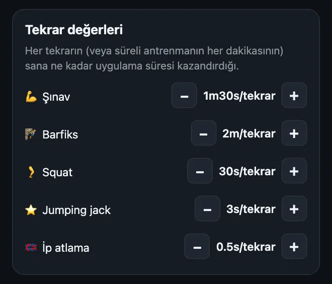

Bir şınav ne kadar ekran süresi etmeli?
Selam millet! HonorFit'te kaydettiğin her tekrar uygulama süresi satın alıyor ve fiyatı sen belirliyorsun. İnsanlar kurulumu bitirdikten sonra bana en çok sorulan soru da bu: bir şınav ne kadar etmeli? Bir dakika mı? On saniye mi? Ben bu konuda şöyle düşünüyorum.
Varsayılanlar
Hiçbir şeye dokunmazsan elindeki ayarlar bunlar:
| Egzersiz | Varsayılan kazanç |
|---|---|
| 💪 Şınav | Tekrar başına 1 dakika |
| 🧗 Barfiks | Tekrar başına 1m30s |
| 🔥 Mekik, 🦵 Squat | Tekrar başına 30 saniye |
| Eklediğin her egzersiz | Tekrar başına 30 saniye |
| Süreli antrenmanlar (yürüyüş, yoga, HIIT) | Dakika başına 30 saniye |
| Mesafe antrenmanları | Km başına 5 dakika ya da mil başına 8 |
| 👟 Adımlar | 1.000 adım başına 3 dakika |
Yani 20 şınav 20 dakika Instagram demek. Birçok kişi için başlangıçta bu aşağı yukarı doğru. Bazıları içinse fazla cömert ya da fazla cimri. Sen hangisisin?
Tek satırda seçmenin yolu
İki sayıyı düşün:
- Normal bir günde engelli uygulamalarında ne kadar süre sana makul geliyor? Olmak istediğin kişiye göre değil, dürüstçe.
- Bunun için gün içine yayarak gerçekten kaç tekrar yapardın?
Sonra böl: tekrar değeri = süre ÷ tekrar. 60 şınav karşılığında bir saat TikTok mu istiyorsun? Tekrar başına 1 dakika. Aynı bir saati istiyorsun ama 120 squat'a varsın? Squat başına 30 saniye. Olay gerçekten bundan ibaret.
2 numaralı sorunun cevabı “pek fazla değil” ise bu da sorun değil. Tekrarlara yüksek fiyat koy ve her güne biraz birikmiş süreyle başlamak için Günlük taban'ı (Ayarlar, ücretsiz) kullan.
Kopyalayabileceğin birkaç ayar
| Egzersiz | Tekrar başına | Bir set ne kazandırır |
|---|---|---|
| Şınav (yeni başlayan) | 1m30s | 10 şınav = 15 dakika |
| Şınav (bir süredir yapıyorsun) | 30 saniye | 40 şınav = 20 dakika |
| Jumping jack | 3 saniye | 100 jumping jack = 5 dakika |
| İp atlama (atlama başına) | 0,5 saniye | 600 atlama = 5 dakika |
| Barfiks | 2 dakika | 5 barfiks = 10 dakika |
| Koşu (mesafe) | Km başına 6 dakika | 5 km = 30 dakika |
Kural şu: bir tekrar ne kadar kolay ve hızlıysa o kadar az etmeli. Bir jumping jack yaklaşık bir saniye sürüyor, yani bir barfiksle aynı süreyi satın almamalı.
1.18.0'da −/+ düğmeleri daha hassas oldu
Yakın zamana kadar en küçük değer 5 saniyeydi; bu da çok hızlı tekrarları (ip atlama, jumping jack) fiyatlamayı zorlaştırıyordu, 3 dakikadan 10 dakikaya çıkmak da bir ömür sürüyordu. Bir kullanıcı ikisi hakkında da e-posta attı, bu yüzden 1.18.0'da −/+ düğmeleri daha akıllı bir merdiveni izliyor:
- 5 saniyenin altında: 4, 3, 2 ve 1 saniye, sonra 0,5, 0,25 ve 0,1 saniye.
- 5 saniyeden 1 dakikaya: 5'er saniyelik adımlar.
- 1 ila 3 dakika: 15'er saniyelik adımlar.
- 3 ila 10 dakika: 30'ar saniyelik adımlar.
- 10 dakikanın üstünde: 1'er dakikalık adımlar.
Bunları iki yerde bulursun:
- Ayarlar → Tekrar değerleri: her egzersiz için bir −/+ satırı. Sadece bir fiyatı değiştirmek istiyorsan en hızlısı.
- Ayarlar → Egzersizler → Düzenle: tam düzenleyici; burada egzersiz ekleyebilir, adını değiştirebilir, silebilir ve tekrar, dakika ve mesafe arasında geçiş yapabilirsin. Tam anlatımı egzersizlerini nasıl özelleştirirsin yazısında.

Fiyatının yanlış olduğunu gösteren işaretler
- Yapmadığın tekrarları kaydettiğini fark ediyorsun. Süren fazla pahalı. Bu, onur sisteminin sana bir şey söylemesi. O isteği hissetmeyene kadar değerleri kademe kademe yükselt.
- Bakiyen hiç bitmiyor. Süren fazla ucuz. Değerleri bir iki kademe düşür ya da bir uygulama daha engelle.
- Tekrarlarını yapıyorsun ama içinden söylene söylene. Muhtemelen fiyat değil, egzersiz yanlış. Nefret etmediğin bir şeyle değiştir. Yürüyüş de sayılır. Daha hafif hareketler de.
- Saatlerce biriktirip hepsini gece harcıyorsun. Harcanmayan süre birikmesin diye Gece yarısı sıfırla'yı (ücretsiz) aç.
Her yeni ayara, tekrar değiştirmeden önce yaklaşık bir hafta ver. İlk birkaç gün ne yaparsan yap tuhaf geçer.
Zor mod ve hasta modu
Her zamanki ayarına uymayan günler için ana ekranın üst kısmına koyabileceğin bir 💀 Zor mod düğmesi var (Ayarlar → Zor ve hasta modu, ücretsiz). Bir kez dokun, her tekrar yarısı kadar kazandırsın. Bir kez daha dokununca 🤒 hasta modu açılır; her tekrar iki katını kazandırır, kendini iyi hissetmediğin günler için. Normale dönmek için bir kez daha dokun. Asıl değerlerin hiç değişmez, yani geri alınacak bir şey yok.
Antrenör değilim: ben uygulamayı yapıyorum, koç değilim. Bir egzersiz canını acıtıyorsa dur; bir sakatlığın ya da sağlık sorunun varsa, senin için neyin doğru olduğunu vücudunu tanıyan birine sor. Sonra HonorFit'i buna göre kur.
HonorFit Blocker, iPhone ve Android için ücretsiz bir uygulama engelleyici. Egzersizleri de ne kadar ettiklerini de sen seçiyorsun. Onur sistemi, kamera yok, hiçbir şey telefonundan çıkmıyor.